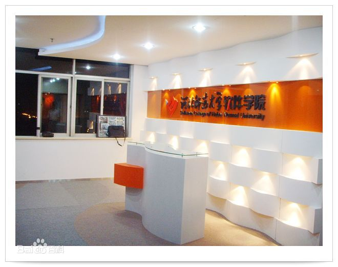
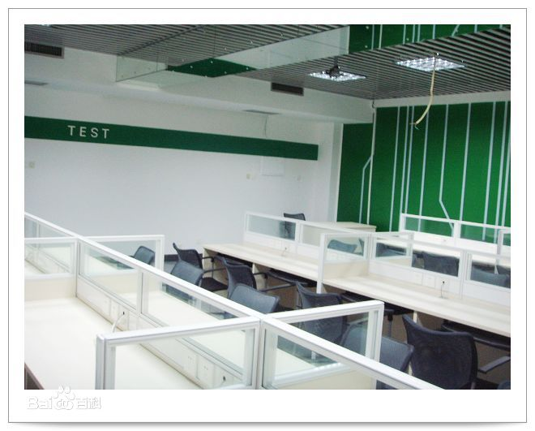
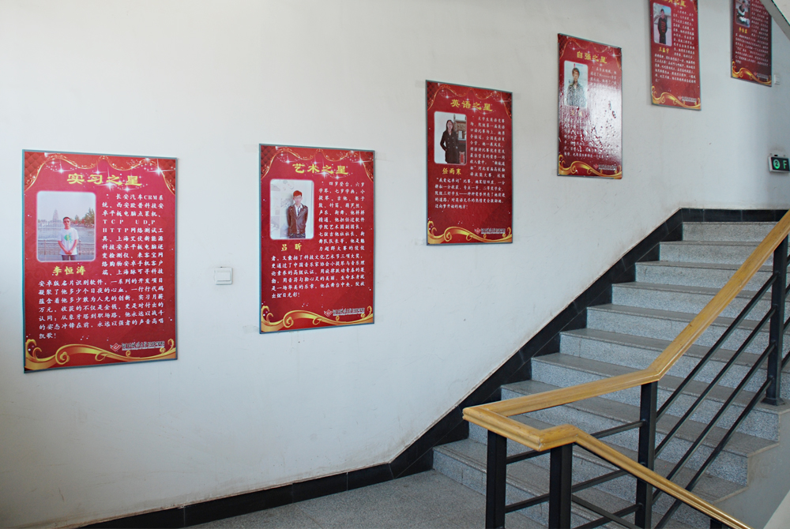

软件学院 河北师范大学软件工程专业开设于2007年，专业隶属河北师范大学软件学院，是为适应我国经济结构的战略性调整和软件产业发展对人才的迫切需要，在深度整合学校优势学科资源和企业丰富的实践经验的基础上发展起来的一个应用技能型专业。学院现有教师120多人，在校生1600人。根据《国家中长期教育改革和发展规划纲要》和《国家中长期人才发展规划纲要》的精神，2010年教育部启动了高校“卓越工程师教育
1

软件工程专业 以学科专业建设为龙头，以推进科技创新、培养模式创新和发展方式创新为核心，紧密跟踪软件技术发展趋势，着力培养行业紧缺的软件工程师。专业依托软件行业前沿态势，从移动互联网开发和大数据与云计算两大领域，开设了“JAVA与大数据分析、HTML5与移动互联网应用开发、JAVA与移动智能设备开发、软件测试、PHP与云计算技术”五个专业方向。
2

培养方案 课程体系紧贴市场需求，由学校与企业联合制定，并与国际接轨。课程体系在符合教育部专业规范的前提下，突出需求导向和应用性导向，加大实践课程比例，并依据市场需求变化及时进行动态调整，时刻保证专业课程设置及教学内容紧跟国际技术前沿，注重学生实践技能与创新精神的合力培养，确保为社会提供
3
学院师资依托河北师范大学的基础课师资及具有丰富经验的企业师资，拥有一支高水平的“双师型”教师队伍，80%以上具有五年以上互联网软件开发与设计经验。采取理论与实践并重的人才培养模式，积极搭建与企业交流合作平台，为学生成长成才提供全方位支持。连续五年蝉联“河北师范大学就业先进集体”荣誉称号。毕业生就业企业涵盖微软、IBM、百度、阿里巴巴、腾讯、奇虎360、新浪、搜狐等国内外一线IT企业。
4

在大众创业、万众创新的今天，河北师范大学软件学院倾注于大学生创新创业工作的开展，并积极实施各项创新创业教育与引导工作。学生在国家、省、市级大学生技能创新等大赛中屡获佳绩，斩获各类奖项上百项，有力的彰显了在工程化人才培养方面的改革创新活力，并专门建立学生创业孵化基地，对有创业意向的学生进行创业指导和支持。
5
学院师资依托河北师范大学的基础课师资及具有丰富经验的企业师资，拥有一支高水平的“双师型”教师队伍，80%以上具有五年以上互联网软件开发与设计经验。采取理论与实践并重的人才培养模式，积极搭建与企业交流合作平台，为学生成长成才提供全方位支持。连续五年蝉联“河北师范大学就业先进集体”荣誉称号。毕业生就业企业涵盖微软、IBM、百度、阿里巴巴、腾讯、奇虎360、新浪、搜狐等国内外一线IT企业。
4